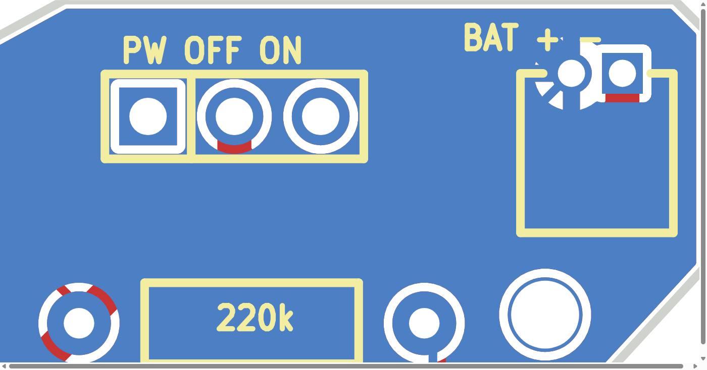
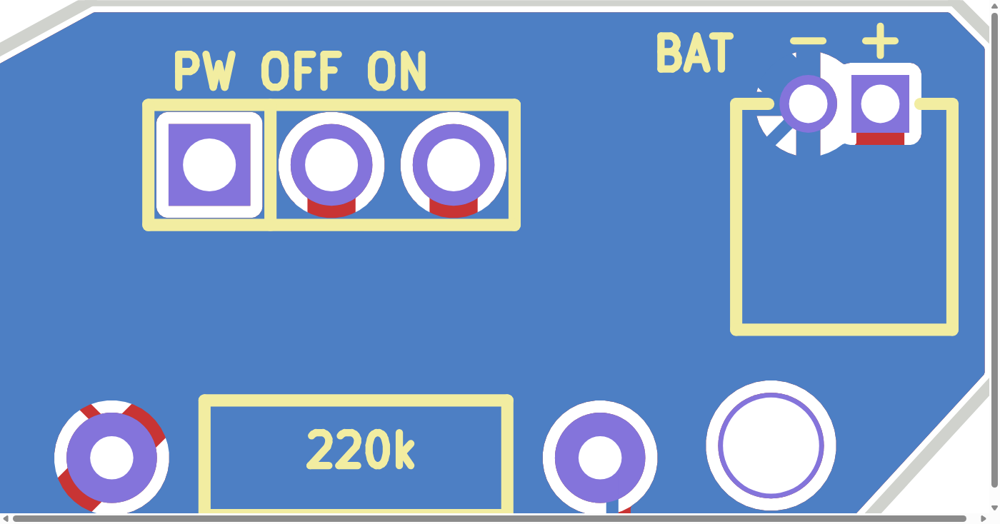
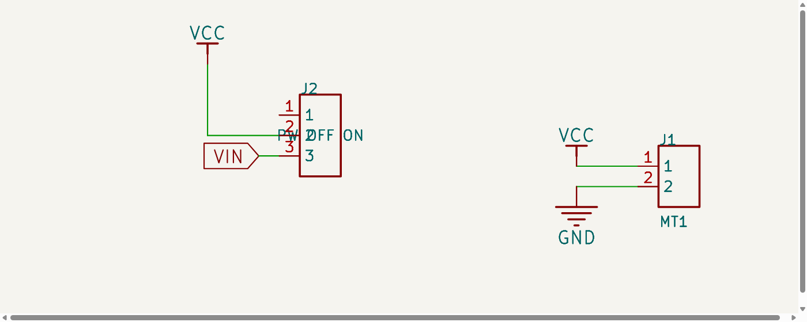
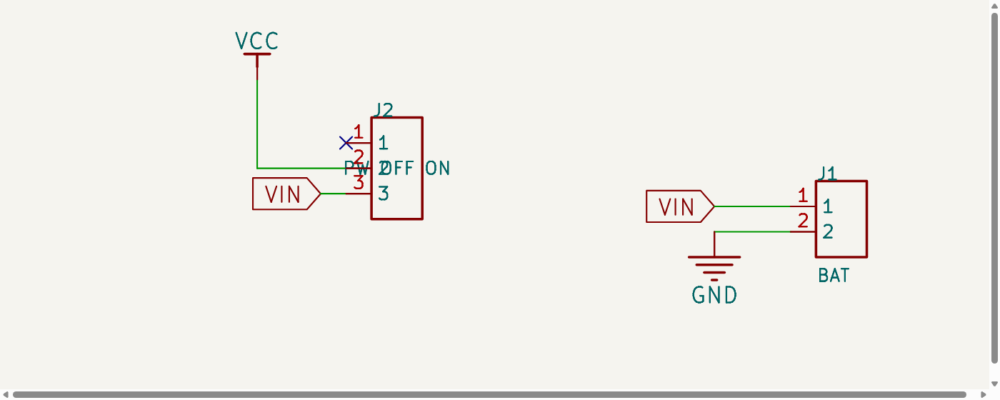

type_m v1.1 · 전원부 수정 확인 (2026-11-01)
배터리 커넥터 극성 표시, 전원 스위치 직렬 연결, 배터리 커넥터 이름 세 가지를 KiCad 회로도·PCB에서 수정했습니다. 아래 그림은 KiCad가 직접 내보낸 SVG를 잘라 확대한 것이며, 배선·인쇄를 손으로 그린 그림이 아닙니다.
1. 배터리 커넥터 J1: 극성 표시와 이름

수정 전 — 인쇄는 BAT + -인데 왼쪽 원형 패드가 GND(−), 오른쪽 사각 패드가 배터리 +.

수정 후 — BAT 옆에 각 패드 바로 위로 −(GND, 왼쪽 원형)와 +(배터리 +, 오른쪽 사각)를 따로 인쇄. 글자 높이 0.8 mm.
| 전면에서 본 위치 | KiCad 패드 | 네트 | 실크 |
|---|
| 왼쪽 원형 패드 | J1.2 | GND (배터리 −) | − 패드 중심 x에 정렬 |
| 오른쪽 사각 패드 | J1.1 | VIN (배터리 +, 수정 전 VCC) | + 패드 중심 x에 정렬 |
패드의 네트를 뒤집지 않고 표시를 패드에 맞췄습니다. J1의 회로도·PCB 값은 MT1(모터 출력 J3와 같은 이름)에서 BAT로 바로잡았습니다. 새 표시의 글자 획은 패드 구리에서 − 0.64 mm·+ 0.33 mm, 보드 외곽선 중심에서 0.65 mm·0.47 mm 떨어져 있습니다(규칙에 실크–외곽 최소 간격이 없어 DRC 대상은 아니며, 일반 제작사 최소값 0.15–0.2 mm보다 큼).
2. 전원 스위치 J2: 실제 직렬 경로

수정 전 — J1.1(배터리 +)이 VCC에 직결되어 모든 부하가 항상 배터리에 연결. J2.3의 VIN은 다른 곳과 연결되지 않은 고립 라벨, J2.1은 미연결 오류.

수정 후 — J1.1이 VIN 라벨로 J2.3에 연결. J2.2(공통)만 VCC. J2.1은 OFF 위치로 의도적 미연결(NC 표시). J1 값 BAT.
J2 핀 역할 (실크 PW OFF ON, 전면 기준 왼쪽부터)
| 패드 | 위치 | 네트 | 역할 |
|---|
| J2.1 (사각) | 왼쪽, OFF 쪽 | 없음 (NC) | 슬라이드 스위치 OFF 위치 접점. 아무것도 연결하지 않음 → 부하 전원 차단 |
| J2.2 | 가운데 | VCC | 스위치 공통(COM). 여기서 U1 5V 핀, DRV8833, 서보 2개, R1 분압으로 전원이 나감 |
| J2.3 | 오른쪽, ON 쪽 | VIN | 배터리 + 입력(J1.1). 스위치가 2–3을 이으면 ON |
PCB에서는 J1.1에서 내려오던 1.0 mm 배선 3개를 VIN으로 바꾸고, VCC 노드로 이어지던 대각 배선 1개를 삭제한 뒤 (172.385, 96.731)에서 J2.3 패드 중심 (172.385, 93.048)까지 1.0 mm F.Cu 배선 1개를 추가했습니다. 가장 가까운 다른 네트 패드(J2.2)와의 간격은 1.19 mm이고, 주변 GND 채움 동판과는 설계 규칙 간격 0.254 mm를 둡니다. 기존 센서(SEN1) 배선과 비아, 외곽, 나머지 부품은 변경하지 않았습니다.
실크 PW OFF ON의 글자 OFF/ON은 패드 1/3 중심에 정확히 놓여 있지 않고 왼쪽이 OFF, 오른쪽이 ON 방향만 나타냅니다. 슬라이드 스위치 손잡이를 오른쪽(BAT 커넥터 쪽)으로 밀면 2–3이 이어져 ON입니다. 스위치 대신 2–3 핀 쇼트 점퍼를 꽂으면 항상 ON입니다.
스위치 정격: J2 접점에는 모터 드라이버·서보 2개·MCU의 전체 부하 전류가 흐릅니다. 2.54 mm 소형 슬라이드 스위치(SS12D00 계열)의 접점 정격은 0.3–0.5 A 수준이라 모터·서보 피크 전류에 부족할 수 있습니다. 부하 전류 예산을 확인하기 전에는 쇼트 점퍼로 운용하거나 피크 전류 이상 정격의 스위치를 고릅니다. 보드 배선 폭은 1.0 mm입니다.
배터리 전압 감지(CHKBAT)
R1(220k)–R2(220k) 분압은 스위치 뒤 VCC에 그대로 두었습니다. 스위치 ON이면 VCC = 배터리 전압이므로 GPIO0은 배터리 전압의 1/2을 읽고, OFF이면 분압 전류(약 9 µA)도 흐르지 않고 꺼진 MCU의 GPIO0으로 전압이 들어가지도 않습니다. 분압을 VIN 쪽에 두면 OFF 상태에서 110 kΩ(R1∥R2)을 통해 VIN/2이 꺼진 핀에 걸리므로 옮기지 않았습니다.
3. 검증 결과
| 검사 | 수정 전 | 수정 후 |
|---|
| 회로도 netlist | VCC = {J1.1, J2.2, J5.1, J6.1, R1.1, U1.8, U2.9}, VIN = {J2.3} | VCC = {J2.2, J5.1, J6.1, R1.1, U1.8, U2.9}, VIN = {J1.1, J2.3}, 나머지 네트 동일 |
| KiCad ERC | 오류 21 / 경고 27 | 오류 20 / 경고 26 — J2.1 미연결 오류, VIN 고립 라벨 경고, J1.1–전원심볼 핀 유형 경고 사라짐; J1.1–J2.3 핀 유형 경고 1개 추가(가져온 심볼의 Unspecified 핀 유형 때문이며 규칙·핀 유형은 완화하지 않음) |
| KiCad DRC (동판 재채움 후, 회로도 일치 검사 포함) | 오류 0 / 경고 12 / 미배선 0 / 불일치 0 | 오류 0 / 같은 경고 12 / 미배선 0 / 불일치 0 (새 0.8 mm 실크는 경고를 추가하지 않음) |
| 구리 접촉 그래프 (네트 이름을 쓰지 않고 실제 패드·배선·채움 다각형 접촉으로 계산) | J1.1 → VCC 부하 전체 | J1.1 → J2.3 뿐. J2.2 → J5.1, J6.1, R1.1, U1.8, U2.9. J2.1 고립. 서로 다른 네트의 구리 접촉 0건 |
| 수정 전 스냅샷 대비 허용 외 변경 | — | 없음 — 34/34 PASS (verify_power_fix.py, 결과). 프로젝트 설정·심볼 라이브러리·설계 규칙 파일은 바이트 단위로 동일 |
수정 전 파일은 before-power-fix.kicad_sch, before-power-fix.kicad_pcb로 보존했고 해시는 센서 단계 검사(revision-comparison.json)가 기록한 값과 같습니다. 적용 스크립트: patch_schematic_power.py, patch_pcb_power.py (이미 적용됨, 재실행 거부).
4. 이 수정이 뜻하지 않는 것
설계 파일 수정이며 이미 실장된 v1 보드의 배선은 바뀌지 않습니다. v1.1 PCB 제작·실물 통전·배터리 구동·모터/서보 부하는 아직 검증하지 않았습니다.
U1(ESP32-C3 SuperMini)의 5V 핀은 VCC에 연결됩니다. 보관 중인 판매자 매뉴얼(.local/type_m/estardyn-manual.pdf, 6장 Power Supply Guidelines)은 5V 핀 입력을 정전압 5 V ±0.2 V로 적고 Type-C와 5V 핀 동시 급전을 금지합니다. 모듈 내부 회로는 KiCad에 없으므로 실물 동작을 단정하지 않지만, 설계상 다음은 사실입니다.
- 스위치 OFF는 배터리만 분리합니다. USB가 꽂혀 있고 모듈이 USB 전원을 5V 핀으로 내보내는 구조라면 모터 드라이버·서보는 USB에서 계속 전원을 받습니다.
- 모듈이 USB 5 V를 5V 핀으로 내보내는 구조라면, 스위치 ON 상태로 USB를 꽂을 때 USB 5 V와 배터리가 VCC에서 만납니다. 이 보드에는 충전·보호 회로가 없으므로, 모듈의 USB→5V 핀 경로를 확인하기 전에는 리튬 배터리를 연결한 채 ON + USB로 두지 않습니다. 이 상태의 CHKBAT는 배터리가 아니라 USB가 공급하는 VCC를 읽습니다.
- 원본 v1은 배터리가 항상 VCC에 직결되어 이 상태를 피할 수 없었고, v1.1은 스위치 OFF로 배터리를 분리할 수 있습니다.
3.7 V 배터리 직결 적합성·승압 필요 여부·사용자 보고(USB 부팅 O / 배터리 부팅 X, 4.9 V 측정)의 원인은 이 수정에서 판단하지 않았습니다.